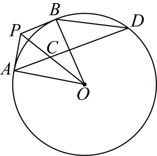
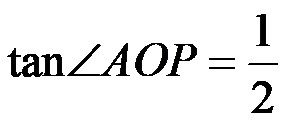

2025年北京市中考数学真题 · 数学解答题 第24题24. 如图，过点P作的两条切线，切点分别为A，B，连接，，，取的中点C，连接并延长，交于点D，连接．（1）求证：；（2）延长交的延长线于点E．若，，求的长．
 的两条切线，切点分别为A，B，连接
的两条切线，切点分别为A，B，连接 ，，，取的中点C，连接
，，，取的中点C，连接 并延长，交于点D，连接．
并延长，交于点D，连接． 的长．
的长．